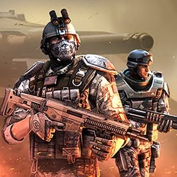

Histoire de Gameloft
Présentation de Gameloft
Fondée en 1999, Gameloft est une entreprise française spécialisée dans le développement et l'édition de jeux vidéo, particulièrement sur mobile.
Elle est notamment connue pour ses franchises Asphalt, Modern Combat, Gangstar et Dungeon Hunter. Son histoire permet de comprendre l'évolution de ce secteur vidéoludique.
Les débuts de Gameloft (1999-2003)
1999 — La création
À la fin des années 1990, Internet est en plein essor et prend de plus en plus d'importance. Dans ce contexte, Michel Guillemot, l'un des fondateurs d'Ubisoft, fonde Gameloft en 1999 afin de conquérir un marché encore peu développé. Il commence également à envisager la création de jeux sur téléphones portables.
2000-2003 — Les premiers jeux mobiles
Au début des années 2000, les capacités techniques des téléphones portables sont très limitées. Ils servent davantage à appeler et à envoyer des messages qu'à jouer. Malgré ces limitations, Michel Guillemot et Gameloft font le pari de développer des jeux adaptés à ces appareils, plutôt que d'attendre que la technologie progresse. Ils se positionnent ainsi parmi les pionniers du jeu mobile.
La croissance de l'entreprise (2004-2007)
Les progrès techniques des téléphones permettent de créer des jeux plus élaborés, avec de meilleurs graphismes et plus de contenu.
Gameloft développe son catalogue et s'étend à l'international, même si ils doivent faire des versions différentes pour la plupart des telephones du marché .
La révolution des smartphones (2007-2012)
L'arrivée des boutiques d'applications
Le lancement de l'iPhone en 2007, puis de l'App Store et d'Android en 2008, transforme le jeu mobile. avec le début des écrans tactiles, les progrès graphiques et les boutiques d'applications qui uniformisent l'accès aux jeux.
Des jeux plus ambitieux
Gameloft adapte ses jeux aux smartphones et développe différents genres :course, action, aventure et jeu de rôle. Le jeu mobile devient alors comme prévu par Michel Guillemot 7 ans plus tôt un secteur majeur du jeu vidéo.
Les limitations techniques moins présente permettent donc à Gameloft de développé des jeux avec une expérience plus proche du jeu sur consoles .

Les jeux emblématiques
Asphalt
Une franchise de course automobile arcade avec des courses rapides et spectaculaires.
Modern Combat
Une série de jeux de tir militaires qui propose une expérience ambitieuse sur mobile.
Gangstar et Dungeon Hunter
Gangstar propose des univers ouverts ressemblant à GTA tandis que Dungeon Hunter mise sur le combat et un univers fantastiques.
Voir plusLes transformations du marché (2013-2020)
Les smartphones deviennent plus puissants et le marché du jeu mobile se développe. Gameloft poursuit la création de jeux destinés à un public international.
Le modèle économique évolue également : certains jeux deviennent gratuits au téléchargement et proposent des achats intégrés facultatifs ce qui transforme la manière dont les jeux sont financés.
Gameloft au-delà du mobile
Gameloft développe aussi des jeux pour ordinateurs et consoles, afin de toucher de nouveaux publics et de proposer des expériences plus variées.
Gameloft aujourd'hui
Gameloft reste présent sur le marché mobile et dévellope des jeux pour d'autres plateformes. Son catalogue est maintenant fait de franchises historiques mais aussi de colaborations notamment avec Dysney
L'entreprise doit faire face à une concurrence importante, aux coûts de développement et à l'évolution rapide des technologies et des habitudes des joueurs.
Conclusion
Depuis 1999, Gameloft est passé des jeux simples sur téléphones portables à des productions plus ambitieuses sur plusieurs plateformes.
Son parcours témoigne des transformations du jeu vidéo, notamment avec l'arrivée des smartphones, l'évolution des modèles économiques et la diversification des expériences proposées aux joueurs.